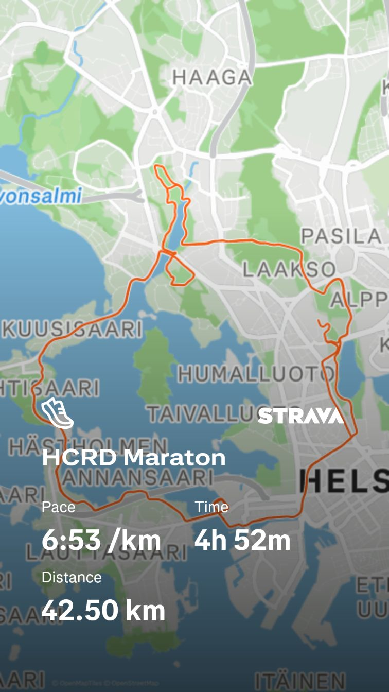
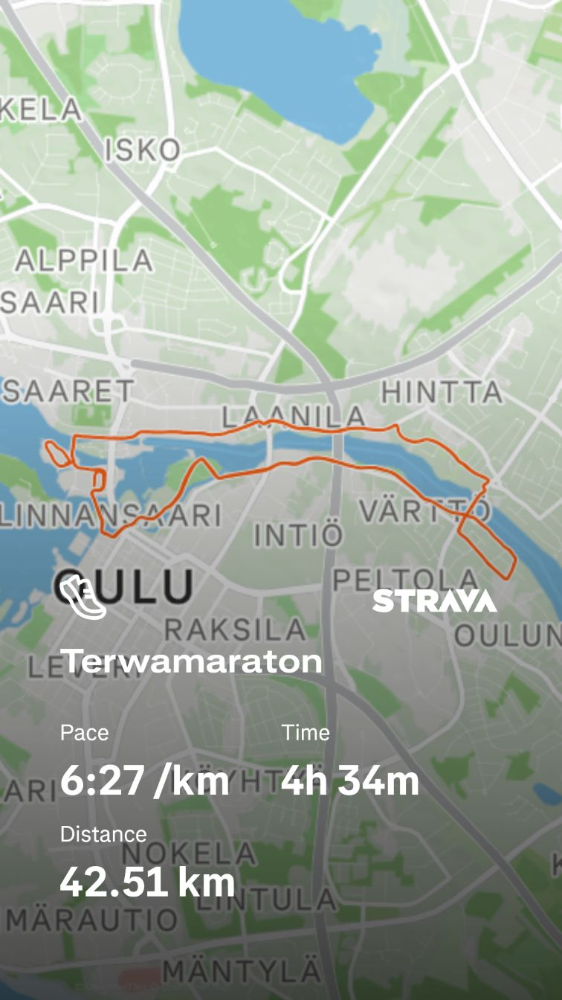
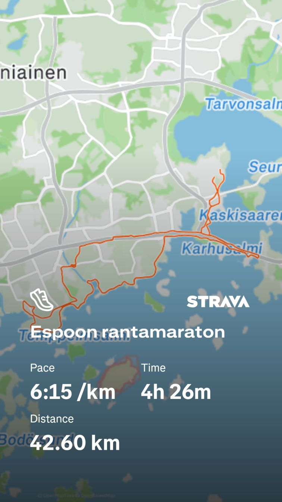

Maratonhaaste: Juoksu Suomessa
Sivuston tarkoituksena on esitellä Suomen juoksukulttuuria ja Suomen kymmenen suurimman kaupungin juoksutapahtumia. Pääteemana on maratonhaaste, eli maraton jokaisessa kaupungissa.
Haasteen tilanne: 3/10 suoritettu
Nämä maratonit on jo juostu!

1. Maraton Helsingissä
4h52min

2. Maraton Oulussa
4h34min

3. Maraton Espoossa
4h26min
Juokseminen kaikissa olosuhteissa
Kestävyysjuoksua harrastaessa juostaan säällä kuin säällä.